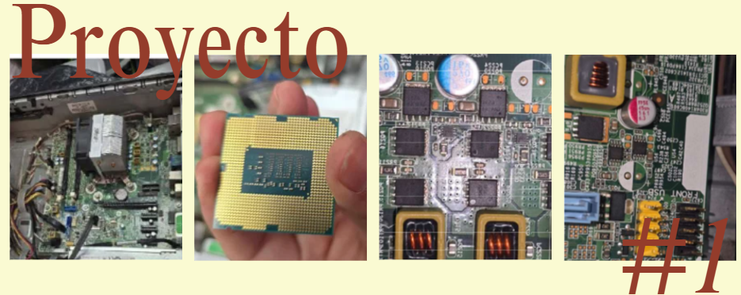
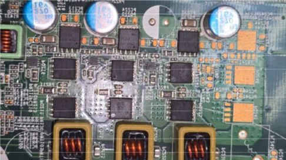

Proyecto Grupal Parcial 1
Este proyecto consiste en realizar el mantenimiento de una computadora, incluyendo la creación y llenado de un formulario de mantenimiento. Además, se debe documentar el proceso mediante fotografías del equipo, sus componentes y del grupo durante la actividad.
También se requiere investigar los componentes de la computadora y algunos circuitos integrados de la motherboard, explicando de forma breve su función. Finalmente, se debe elaborar un informe del mantenimiento realizado, integrando todo en un solo documento del Primer Proyecto Parcial.
el objetivo es realizar el mantenimiento preventivo de un equipo de cómputo, identificando y analizando cada uno de sus componentes internos mediante el uso adecuado de herramientas y materiales de limpieza, con el fin de conocer su funcionamiento y elaborar un informe completo del proceso realizado.
El proyecto se realizó en grupo llevando los insumos solicitados, como el case de computadora con sus componentes internos, herramientas para desarmar el equipo, kit de limpieza, pasta térmica y materiales de protección para el área de trabajo. Primero se colocó una bolsa plástica sobre el escritorio para mantener limpio el espacio y proteger los componentes.
Luego se procedió a desarmar cuidadosamente el equipo de cómputo utilizando las herramientas adecuadas, identificando cada una de las partes internas del CPU.
Se realizó la limpieza preventiva utilizando aire comprimido, espuma limpiadora y limpia contactos para eliminar polvo y suciedad acumulada en los componentes. También se aplicó pasta térmica al procesador para mejorar la disipación de calor. Después de finalizar la limpieza, el equipo fue ensamblado nuevamente verificando que cada componente quedara correctamente instalado.

